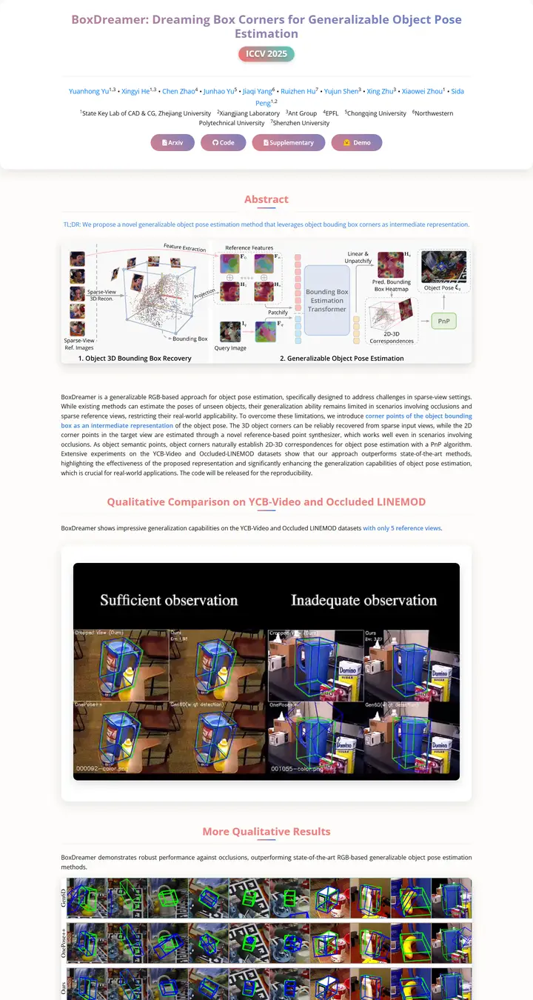

BoxDreamer: Dreaming Box Corners for Generalizable Object Pose Estimation
Rose dusk on warm paper: a coral-to-azure gradient threads through the title, the pills and every heading underline over a soft ivory page.

Checked against the rendered page. Declared 300/500 weights render as 400; title gradient animates so screenshot hue varies.
Why it is here
Warm off-white background with a mauve-to-teal gradient for title, pills and headings. Figures and video sit in soft cards, and the page reads as one consistent palette.
Overview
Color Palette
Typography
Open Sans
BoxDreamer: Dreaming Box Corners for Generalizable Object Pose Estimat
Abstract · Method · Results · BibTeX — 0123456789
Spacing & Shape
Page Modules
Guidelines
More like this

CRAFT: Training-Free Cascaded Retrieval for Tabular QA
A tidy product manual in pale blueprint blue, where every stage wears its own colored edge.

Efficient Self-Evaluation for Diffusion Language Models via Sequence Regeneration
A tidy stack of rounded cards washed in a blue-violet-apricot dawn, signed with a gradient wordmark.

FIGMA: Towards FIne-Grained Music retrievAl
A music journal on warm paper: a heavy Newsreader headline under a red kicker, big red serif numerals for the results, and figures resting in soft cream frames.

GuideDog: A Real-World Egocentric Multimodal Dataset for Blind and Low-Vision Accessibility-Aware Guidance
A quiet monograph page: one serif column, oxblood ink for the links, and a table that blushes only at its own row.

LaMI: Augmenting Large Language Models via Late Multi-Image Fusion
A careful conference handout: Noto Serif headings, navy outlined buttons and soft grey bands taking turns.

PairCoder++: Pair Programming as a Universal Paradigm for Verified Code-Driven Multimodal and Structured-Artifact Generation
A crisp white product page: a blue announcement strip, ink-black pill buttons and every figure on a soft-shadowed card.